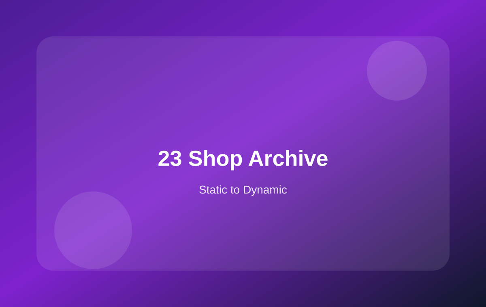

23 商店列表动态化：从产品 Grid 到 Archive Template
更详细地整理商店页、分类页、工具栏、排序、分页和筛选侧栏如何接入 WooCommerce。

本页学习重点
商店列表动态化：你要理解的 6 个区域
页面标题Shop、分类名、搜索结果标题。
结果数量Showing 1–12 of 40 products。
排序默认排序、价格排序、最新排序。
产品循环输出产品卡片。
分页多页产品列表导航。
筛选侧栏分类、属性、价格、库存状态。
模板文件关系
your-theme/
└── woocommerce/
├── archive-product.php # 商店页 / 分类页外层
├── content-product.php # 单个产品卡片
└── loop/
├── orderby.php # 排序下拉
├── result-count.php # 结果数量
└── pagination.php # 分页
产品列表核心结构
<div class="toolbar">
<?php woocommerce_result_count(); ?>
<?php woocommerce_catalog_ordering(); ?>
</div>
<div class="grid">
<?php if ( woocommerce_product_loop() ) : ?>
<?php while ( have_posts() ) : ?>
<?php the_post(); ?>
<?php wc_get_template_part( 'content', 'product' ); ?>
<?php endwhile; ?>
<?php endif; ?>
</div>
<?php woocommerce_pagination(); ?>
分类侧栏如何动态化
| 静态筛选项 | 动态来源 | 说明 |
|---|---|---|
| Decking / Cladding / Fencing | 产品分类 product_cat | 可显示分类名称和产品数量 |
| 颜色 / 长度 / 材质 | 产品属性 pa_color 等 | 适合做筛选或变体选择 |
| 价格范围 | 价格筛选 Widget / 插件 | 真实价格筛选通常不建议手写复杂逻辑 |
| In stock | 库存状态 | 可结合库存筛选插件或自定义查询 |
本页总结
商店列表页的核心是产品循环。你的静态 Grid、Toolbar、Sidebar 都可以保留，只需要逐步把数据来源替换为 WooCommerce。